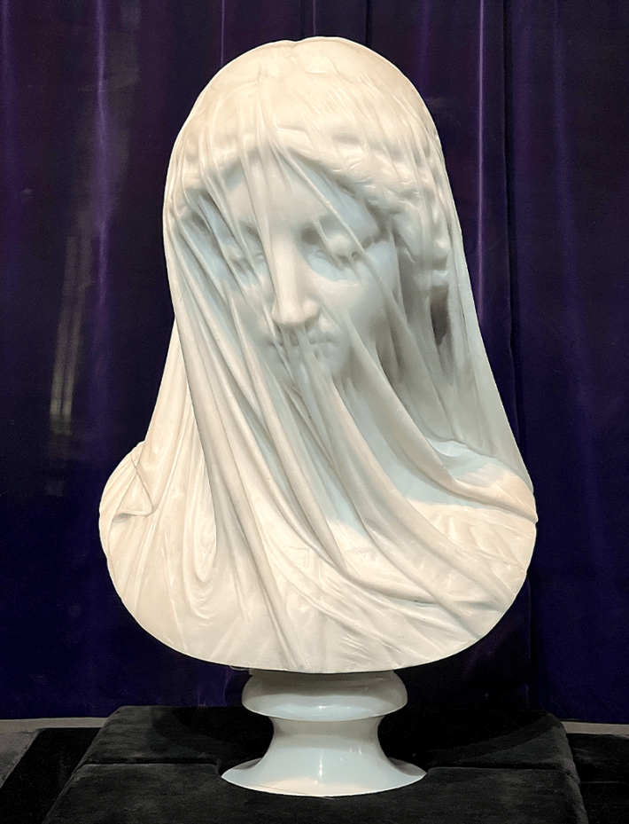

One of the greatest questions of the modern age is: Is it cake? As in: Is it an espresso machine, or cake? Paint can, or cake? Air fryer, or …? Millions of viewers have watched rapt as TikTok bakers slice or bite into inedible-looking objects with fluffy, frosting-filled innards … or have tuned into Is It Cake?, the aptly named Netflix show. Why? As a form of entertainment, this kind of visual trick is hardly new. For centuries, artists have delighted in fooling us into thinking one material is another. From Michelangelo’s marble David, with his sinewy, soft-looking flesh, to Giovanni Strazza’s Veiled Virgin, draped in a marble veil that appears gossamer thin. What makes these illusions so mesmerizing? Maybe it’s because these classic works of art and these modern social media ruses test our ability to use an underappreciated skill that’s been essential to our species’ survival: identifying what stuff is made of.
Over the past century, neuroscience has made great strides in understanding how the brain visually identifies objects—like mugs, trees, and faces. But the question of how we recognize what those objects are made of (smooth porcelain, rough bark, soft flesh) has been overlooked until relatively recently. “Our world contains both things and stuff, but things tend to get the attention,” wrote Edward H. Adelson, an MIT neuroscientist whose provocative 2001 paper, “On Seeing Stuff: The Perception of Materials by Humans and Machines,” spurred a flurry of material perception research.1
Nautilus premium members can listen to this story, ad-free.
Nautilus members can listen to this story.
“Yet materials are just as important as objects are,” he wrote. “Our world involves steel and glass, paper and plastic, food and drink, leather and lace, ice and snow, not to mention blood sweat and tears.”
It’s strange that the field of material perception is so new, considering how essential the ability to decipher what things are made of is. “When we look around our world, everything is made of materials,” says Alexandra Schmid, a postdoc at the National Institutes of Health’s National Institute of Mental Health. “And we need that information to know how to interact with that world.” Recognizing what an object is made of tells us—as it told our ancestors—how we can interact with it: Can we squeeze it? Eat it? Touch it without getting burned or scratched? Pick it up? (And if so, using how much force?) Material perception helps us spot the glimmer of potentially potable water, and sort firm, fresh-looking fruit from wrinkled, rotten ones. Humans, like chimpanzees, use material properties like hardness to determine if a rock is a suitable weapon or tool. And brains that are optimally tuned to making these sorts of decisions efficiently and accurately are essential to survival and reproductive success, especially as our evolutionary predecessors navigated the travails of early human history.
Even when we’re not seeing a material, our minds can fill in the blank of what it should look like.
Since Adelson’s provocative paper two decades ago, the study of material perception has exploded. Recent studies have investigated how we categorize specific materials, such as wood or metal, as well as isolated material properties, including hardness, color, or elasticity. Dozens of papers exclusively tackle our perception of “gloss.” Yet despite the neuroscientific progress studying how our brains make sense of this narrow band of materials and properties, until recently, researchers didn’t have the foggiest sense of the span or range of materials humans perceive.
Now, a paper recently published in the Proceedings of the National Academy of Sciences proposes a sweeping, generalized approach to understanding material perception.2 Most prior research has focused on testing specific material qualities that scientists predetermined to be important to perception—such as shininess, hardness, or color. Schmidt and her coauthors of the PNAS paper took a different approach: letting patterns emerge naturally from behavioral data. Using methods borrowed from machine learning, they were able to uncover 36 fundamental dimensions that our brains consider to understand materials.

NOT CAKE: Sculptors have delighted for centuries in making art that fools our brains into thinking marble is anything but. Credit: Shhewitt / Wikimedia Commons.
“We wanted to take a bottom-up approach,” says Martin Hebart, a researcher at Justus Liebig University Giessen who coauthored the paper. “To get a bigger picture and figure out what things we should actually be caring about and studying.”
The team began by collecting a dataset of 600 images of 200 different materials—for example, brick, velvet, sandpaper, plastic. Next, they presented thousands of participants with sets of three images and asked them to rate which of two images was most similar to the third (reference) image. After collecting nearly 2 million ratings, they used a technique borrowed from machine learning to derive 36 “core dimensions of material perception.” These are essentially the cognitive axes humans use to sort materials. For example, we use the “mineral” dimension to sort images by how rough, rocky, hard, or otherwise mineral-y they appear. Other dimensions rate objects by how fabric-y or how metallic they look. Some dimensions matched categories that previous experimenters had investigated, such as texture and color. Others—such as “crystalline,” “small,” and “spongy”—were novel. In theory, these 36 dimensions can now help researchers understand what the human brain is keying off of when it decides that a rock looks more similar to a mirror than to, say, a fluffy blanket.
“Their paper is really taking us a lot further toward understanding how we actually recognize things,” says Robert Kentridge, a professor at Durham University who was not involved with the study. “It really gets you thinking about the different ways of working out how vision works, how we end up with higher-order representations.”
Scientists are only beginning to understand how the human brain identifies materials. It’s a seemingly simple task, undergirded by complex computations that happens in the blink of an eye. Consider a soap bubble—its shiny surface mirrors whatever environment it’s in. Visually, it can look entirely different from one setting to another. Yet our brains have no difficulty identifying it as the same glossy, filmy object each time. Despite the dramatic change in appearance, we perceive consistency. How?
Recognizing what an object is made of tells us how we can interact with it: Can we squeeze it? Eat it?
At first, researchers hypothesized that the brain might have dedicated regions for detecting specific material qualities, such as glossiness. They proposed that neural circuits might be solving an “inverse optics problem”—inferring the physical properties of a surface by analyzing the patterns of light hitting the retina. However, that approach turned out to be computationally intractable. Now, the field has come to view material perception as a gestalt process—one that taps a diverse range of neural circuitry. Rather than relying on a single, specialized “material recognizing” region, our brains draw on a network of systems that integrate low-level visual features with higher-order knowledge—such as context, memory, touch, and real-world experience—to determine what something is made of. “We’re seeing a distributed network, definitely,” Schmidt tells me. “There is no ‘stuff’ area. It’s all over the place.”
In a 2021 NeuroImage paper, Schmid and collaborators wanted to see what would happen in the brain when we detected material motion—such as cloth flapping or jelly wobbling—but without any visual surface texture.3 To test this, they created what she calls “dynamic dot materials,” animations of black dots on gray backgrounds that simulated material motion. When study participants viewed just these moving dots, they were able to guess what material they represented, such as jelly or liquid. What’s more, scans of their brains showed activation across visual pathways, somatosensory areas, and even motor regions. “It was surprising, because we saw activations in regions that were not historically thought to process motion … including areas that were thought to process texture of objects and patterns,” Schmid says.
All of this implies that even when we’re not seeing a material, our minds can, to some extent, fill in the blank of what it should look like and how it should behave. The brain “identifies the object as a cloth flapping in the wind, infers the object’s weight under gravity, and anticipates how it would feel to reach out and touch the material,” the authors of the study write. The brain doesn't just see materials; it experiences them across multiple sensory dimensions.
All of these recent investigations are revealing how deeply we seem to be wired—and in complex, surprising ways—to recognize what stuff is made of. Which maybe explains why we’re so fascinated by illusions that challenge this ability. A glitch in our material perception systems could ruin our ability to interact appropriately and productively with the world. Hence the enduring question: Is it cake? 
References
-
Adelson, E.H. On seeing stuff: The perception of materials by humans and machines. Proceedings of SPIE—The International Society for Optical Engineering 4299 (2001).
-
Schmidt, F., Hebart, M.N., Schmid, A.C., & Fleming, R.W. Core dimensions of human material perception. Proceedings of the National Academy of Sciences e2417202122 (2025).
-
Schmid, A.C., Boyaci, H., & Doerschner, K. Dynamic dot displays reveal material motion network in the human brain. NeuroImage 117688 (2021).
Lead image: ciciliana / Shutterstock